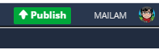
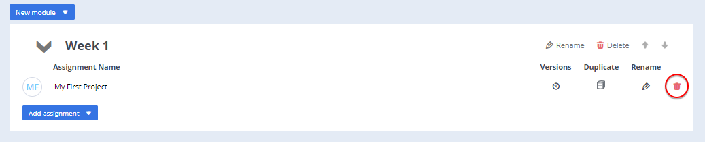
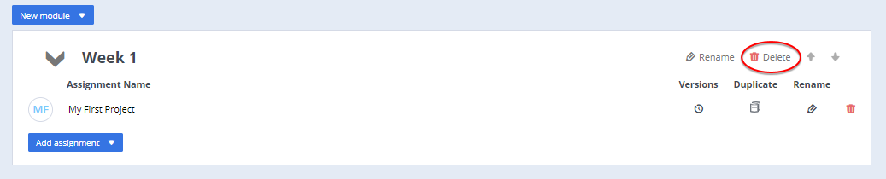

Add and Remove Course Assignments¶
In Codio, a module is a container that holds a collection of assignments. An assignment is a project that has been assigned to a course (also referred to as an assessment). The scope of the assignments is entirely up to you. It can be a project assignment that a course works on or a tutorial, but they typically relate to the lessons in the course.
Create Course Module¶
You must first create the module that holds the assignments. You can create an empty module or copy an existing module. Follow these steps to add a module to a course:
From the Courses page, select the course to open it.
Click the Edit Assignments tab. When you first create a course, the list of modules and assignments is empty.
Click the New Module button and choose Add Empty Module or Add Copy from Existing.
To add an empty module, enter the name for the new module and click Add Module.
To add copy from existing module, select a course, check the check boxes for the modules to be copied, and then click Select. The modules are added to your course.
Add Assignments to Module¶
Once the course modules are created, you can add assignments (projects). You can create a new project or import existing projects.
In the course module, click Add Assignment.
On the Create Assignment page, click New or Existing.
To create a new assignment:
Add assignment, and choose: New.
Select the starting point (Stack, Starter Pack, etc.).
Enter a name and description, select icon and click Create.
If you want to import a project-based assignment:
Add assignment, and choose: New.
Click Copy Project under Selecting your Starting Point and browse to the project and select it.
Click Create.
To add assignments from existing courses:
Add assignment, and choose: Existing.
Select the course and module.
Check the check boxes for the assignments to be added to the course.
Click Select.
To add assignments from course share codes:
Add assignment, and choose: Existing.
Select Get by code tab.
Enter course share code and click the Show Content button.
Check the check boxes for the assignments to be added to the course.
Click Select.
Note
For more information about authoring course content, click here.
Open the assignment to review it in the IDE and when ready Publish it . The assignment is not visible to students until it’s published.
As you update your assignment, a Publish button will show on the top menu bar, to the left of your username.

There is also an option to publish in the Education menu item in the top menu bar.
Note
If you change the stack or files via the terminal, the publish button on the top menu bar will NOT appear If you add and remove the same character, it will assume that you made a change even though the start and end file are the same
If you make changes to the assignment, you must publish it again before the changes are visible to your students. You can view the details of previously published versions in the log area and also if the course is a child of a parent course, details of the associated parent course.
After assignments are added to the course, students can access them from their dashboard. To confirm the assignments are available, log in as a student, select the course and module, and view the assignments.
Update assignment content and stacks¶
Codio recommends that you connect your assignments to a remote repo such as GitHub or BitBucket, so you can push updates and maintain version control of the content being pulled into your assignments.
Assignment Updates - You can update all assignments that use the same content by pushing the updates to the repo and then pulling the changes into the different courses that use the content. You can also review the changes by others before deciding whether to pull the content into the course assignment.
Note
The code workspace can be updated with new files that have been added and students can see the changes. However, existing files cannot be updated as this can invalidate work for students who have already started the assignment.
To enable students to see new content in a course they have already started, you can Reset the assignment (see Assignment Settings). However, if you reset an assignment, the existing work they have already completed is lost.
Stack Updates - If changes to the stack used in the assignment are required, the stack must be updated before publishing the assignment updates. You can either create a new version of the stack (if you have permissions) or create a new stack. See Modify Stack for more information.
You can also change the stack details in the assignment if the changes are only to the stack.
Assessment Updates - Most assessment changes can be safely upgraded unless the structure of the question has been changed (for example, a multiple choice question has been changed from single response to multiple responses). In this case, the student response data can be invalidated.
Remove course assignments¶
You can remove assignments from a course and remove course modules. However, you should be aware that when you delete a module or assignment from your course, it removes all student data for all assignments in the module, including assessment data and results. This data cannot be restored so it’s recommended that you download the data to a .csv file before deleting a module or assignment.
To delete an assignment in a course module, click Delete for the specific assignment.

To delete a course module, click Delete in the module.
